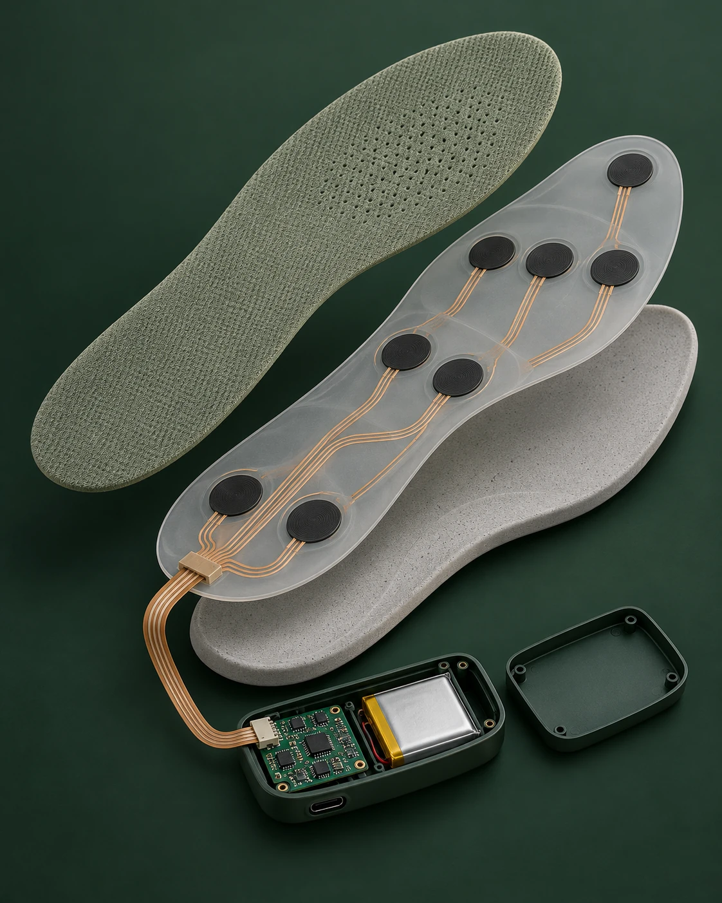
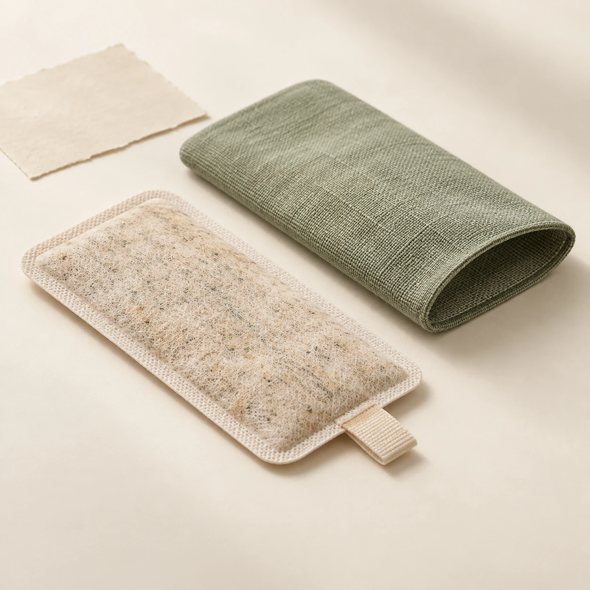

感知
从足底压力、步态、双足温差和鞋内湿度中，读出日常变化。
SENSE THE SIGNALEVERY STEP TELLS A STORY 001 / 2026
一双懂得感知的鞋垫，
一份真正看得懂的健康洞察。
大脚板将足底受力、行走节奏与鞋内环境转化为清晰的日常提示，让关怀从脚下自然发生。

每天的行走都在留下细微线索。我们让鞋垫安静地记录，再把复杂数据翻译成简单、克制、能行动的建议。
从足底压力、步态、双足温差和鞋内湿度中，读出日常变化。
SENSE THE SIGNAL与个人近期记录对照，让变化有背景、有解释，而不只是一串数字。
FIND THE CONTEXT给出足部观察、休息和穿着建议，帮助用户迈出下一步。
CARE WITH CLARITY亲自切换不同状态，看看大脚板如何把感知结果变成可以理解的日常行动。
左右足的压力分布接近，前掌与足跟受力均匀。
今日步态与足底受力保持平稳，继续维持舒适的行走节奏。
我们看到了什么
鞋垫记录到的步态、受力与足温变化都较平稳。
变化趋势
近 7 日步态稳定度保持平稳。
| 日期 | 足底压力 | 步态 | 温差 | 湿度 | 状态 |
|---|

可更换草本药芯让日常穿着多一份熟悉的感受。平台关注的是佩戴、清洁与更换提醒；药芯的调理效果仍需独立研究和验证。